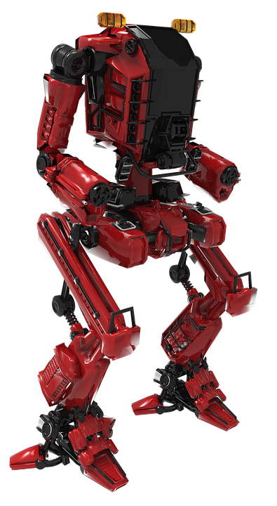

La tecnología es solo una herramienta. Puede ser utilizada para el mal o para el bien
Hey Arnold, ¿qué pasa? ¿Por qué estás así? Un poco cabizbajo? Tú sabes qué es eso… pero tu cabeza no te quiere dar las palabras exactas para describirlo. No quieres enfrentarte a algo tan palpable como algo legible y “real”. Prefieres que se quede en la penumbra de tus neuronas revoloteando, impalpable e incomprensible por ti, quizá de ese modo también le puedes dar una solución mágica, como sueles hacer, de esas que ni tú mismo entiendes. Mecanismos internos que solo pueden ser producto de la evolución del ser humano y que no entendemos. Si. Quizá eso es lo que quieres… De todos modos no te escapas…. Solo al escribir esto ya lo estas plasmando, y sin querer quieres darle una solución. Tal vez esta misma, el hecho de escribir y pensar indirectamente al respecto, sea la solución mágica que quieres encontrar, pero aun a la magia le quieres dar explicación y eso está mal! Existe un sinsabor que no sabes de qué es ni de donde proviene…puede que sea por la situación de tu vida en estos momentos; trabajando mucho y disfrutando poco; te sientes algo solo. Quisieras estar en una fiesta como ayer, pero sabes que no se puede, y no se debe. ¿Para que escribes? ¿Para leerlo otro día? ¿De que te serviría eso?.. ¿Te causará nostalgia leer esto cuando viejo y por eso lo haces? , ¿Escribir un libro algún día? ..y estas ensayando?.. Pero todavía no tienes ni idea de cómo se hace… crees que esto es un monólogo pero no estás seguro.. y en realidad yo tampoco.. esas definiciones no son importantes para mí ni para el propósito de este acto.
Lo que yo sé.. es que tienes un pequeño vacío.. y te gusta ser perfeccionista.. eres impaciente, y la combinación de ambos rasgos te hacen sufrir. Quisieras estar como te imaginas en tus ideales. Pues eso, no se puede. La vida es un desequilibrio equilibrándose. Uno nace con un potencial de vida.. cosas que puedes agotar y que causan felicidad cuando se van consumiendo. Es como tener un pote lleno de “no costumbre” la cual vas consumiendo y vas vaciándolo en cada tema…. Ya sea en la música, en los deportes, en todo. Finalmente se agota un tema, o una actividad y deja de brindarte alegría y felicidad. El hombre se acostumbra y va perdiendo el interés por algo que agota. Si te gusta la chicha morada entonces debes tomarla moderadamente ya que si te excedes y abusas de su consumo, es inevitable que pierda la gracia y pase a ser algo tan normal y sin efecto en tu estado de ánimo como lo es respirar. Muchas cosas se rigen bajo esto. No desees estar como quisieras, si lo lograras demasiado pronto, luego te acostumbrarías. Disfruta de la subida y de las proyecciones. De saber que estas subiendo, y no te quejes ni te sientas mal por ver la meta muy alta. Eso te debería alegrar, porque significa que te queda mucho por disfrutar.. Es como si estuvieras disfrutando de una película, y todavía sabes que falta la mejor parte. Míralo como un desequilibrio que se puede equilibrar para tu beneficio y te puede causar alegrías. La vida es un vaivén. Sin sufrimiento no hay alegría. Seguro has escuchado eso miles de veces.. hasta una vez creíste inventarlo. .. Es muy cierto. Sabes todo eso; sabes que el resto está igual.. porque todos somos humanos.. por qué quieres ser tú el único privilegiado? Ambicionas mucho.. Sería mejor que no pudieras pensar en el futuro. Te has puesto a pensar que de repente no es bueno creer en ideales ni utopías? Son cosas muy difíciles.. y generalmente terminas decepcionado al no alcanzarlas. Muchas expectativa para la función puede opacar la mejor obra de teatro, así que no cometas ese error con tu propia vida. Yo desde este palco lo estoy disfrutando. Y tú que eres el artista, deberías hacerlo igual que yo. También te puedes reír de ti mismo. Eso también vale. Reírte junto a mí, en una especie de comunión. Estas mejorando en verdad. Hasta me quieres imitar y por eso mismo estas escribiendo esto. Quieres que me dé cuenta que ya te diste cuenta de mi existencia. Y lo estas logrando. Escribes como si fuera yo. Pero sabes que eso es imposible. No puedes alcanzarme. Pero si puedes estar de acuerdo a mí y actuar como yo lo haría si estuviera en tu lugar. Eso es lo máximo que puedes hacer; por ahora.